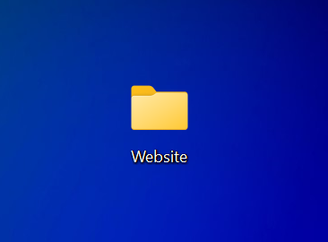
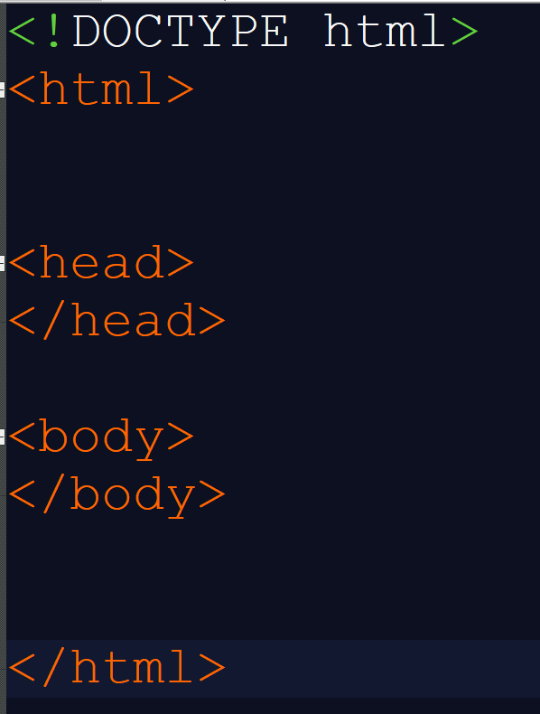
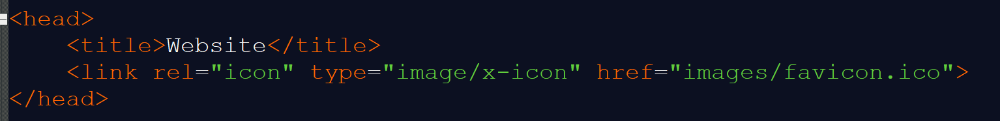
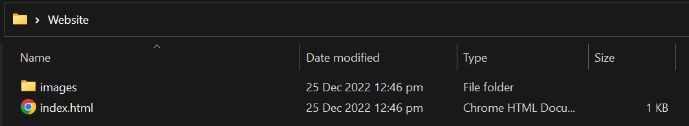
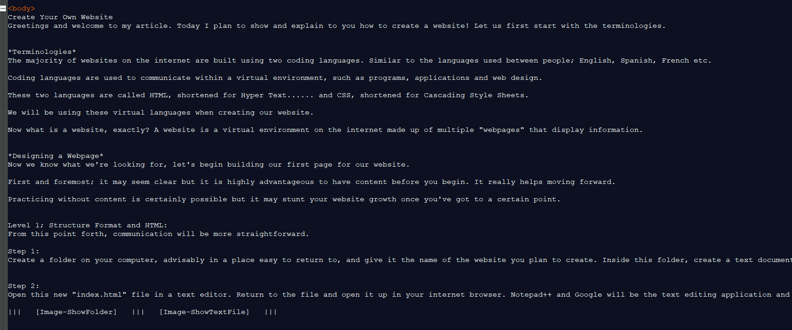
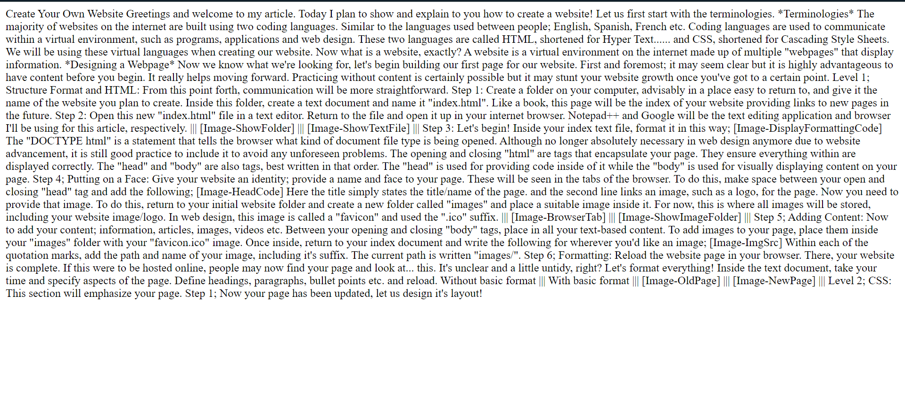
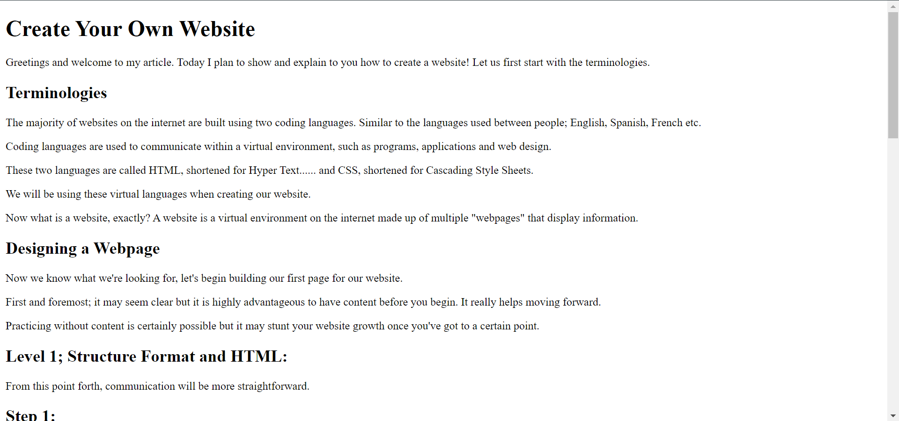

Building a Website
Greetings and welcome to my article. Today I plan to show to you and explain how to create a simple website. First, let's start with the understanding the terminologies we'll be using.
Terminologies
The majority of websites on the internet are built using two coding languages;
These two languages - HTML, shortened for "HyperText Markup Language" and CSS, shortened for Cascading Style Sheet - will be the virtual languages we'll be using when creating our wesbite.
What does a website consist of? A website is a virtual environment on the internet made up of multiple "webpages" that display information.
Building a Webpage
Let's build our first webpage for our future website. Before moving forward, however, it is highly advantageous to have content before you begin. It really helps moving forward. Practicing web design without content is certainly possible but it may stunt your website growth once you have reached a certain point.
I will be creating a series of articles to help guide you through the different levels of building a website. Each level will strive to be as concise as possible.
Level 1; Structure Format using HTML:
Step 1:
Create a folder on your computer, advisably in a place easy to return to, and give it the name of the website you plan to create. Inside this folder, create a text document and name it "index.html". Like a book, this page will be the index of your website providing links to new pages in the future.
Step 2:
Open this new "index.html" file in a text editor. Return to the file and open it up in your internet browser. Notepad++ and Google will be the text editing application and browser I'll be using for this article, respectively.

Step 3:
Let's begin! Inside your index text file, format it in this way;
The "DOCTYPE html" is a statement that tells the browser what kind of document file type is being opened. Although no longer absolutely necessary in web design anymore due to website advancement, it is still good practice to include it to avoid any unforeseen problems.
The opening and closing "html" are tags that encapsulate your page. They ensure everything within are displayed correctly.
The "head" and "body" are also tags, best written in that order. The "head" is used for providing code inside of it while the "body" is used for visually displaying content on your page.
Step 4 - Putting on a Face:
Give your website an identity; provide a name and face to your page. These will be seen in the tabs of the browser. To do this, make space between your open and closing "head" tag and add the following;
Here the title simply states the title/name of the page. and the second line links an image, such as a logo, for the page. Now you need to provide that image. To do this, return to your initial website folder and create a new folder called "images" and place a suitable image inside it. For now, this is where all images will be stored, including your website image/logo. In web design, this image is called a "favicon" and uses the ".ico" suffix.
Step 5 - Adding Content:
Now to add your content; information, articles, images, videos etc. Between your opening and closing "body" tags, place in all your text-based content. To add images to your page, place them inside your "images" folder with your "favicon.ico" image.
Once inside, return to your index document and write the following for wherever you'd like an image;
Within each of the quotation marks, add the path and name of your image, including it's suffix. The current path is written "images/".
Step 6 - Formatting:
Reload the website page in your browser. There, your website is complete. If this were to be hosted online, people may now find your page and look at... this. It's unclear and a little untidy, right?
Let's format everything!
Inside the text document, take your time and specify aspects of the page. Define headings, paragraphs, bullet points etc. and reload.
BeforeAfter Conclusion
And there we go, we've created our first webpage for our future website! Now yes, although our site still looks quite simple, this is pretty much it. You'll need to continue this process for each page, attach links to each of them and there you have it, your website is created!
In the next article I write, relating to web design, I'll teach you how to use CSS to decorate your page. Repositioning content, colouring, formatting and so on... I hope this article has helped! Thank you for reading~